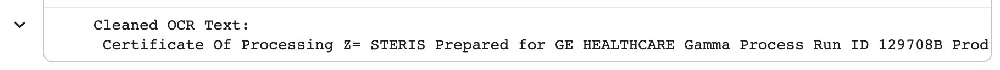
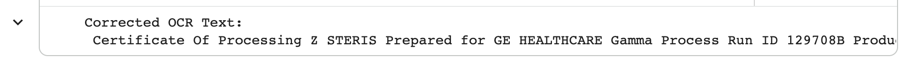

(opens the picture full size in a new tab)
(opens the picture full size in a new tab)These 7 cells do the same jobs as notebook steps you already ran in Try It Yourself, written another way. You don't need them for the Task, but if you're curious, try them in a copy of your notebook, so the notebook you use for the Task stays as it is.
The cells change some of the names the notebook uses, such as ocr_text and key_fields. That's why they go in a copy, at the bottom, after every other cell has run.
The notebook's STEP 11 cell cleans the text in one go and saves it as ocr_text_clean. The reading also does this cleaning in two smaller cells, one change at a time, so you can see each one.
Tesseract sometimes breaks text into multiple lines when it shouldn't. Let's remove these extra line breaks and spaces.
Add a new cell at the bottom of your copy (+ Code), paste this in and press Run:
# Remove excessive newlines and extra spaces
ocr_text = " ".join(ocr_text.split())
print("Cleaned OCR Text:\n", ocr_text).split() breaks the text into a list of words." ".join(... ) puts the words back together with single spaces, removing extra gaps and newlines.Why Do This? Now our text will be formatted like a normal paragraph, instead of having random line breaks.
What you'll see in Colab:

(opens the picture full size in a new tab)Colab cuts the long line off at the right edge of the cell. This is the full text it prints:
Cleaned OCR Text:
Certificate Of Processing Z= STERIS Prepared for GE HEALTHCARE Gamma Process Run ID 129708B Product Code Product Lot Number “ Quantity UOM Cytiva (25-40 kGy) 17242818 19 .. CS Cust Item ID: 29-1846-12 Cytiva (25-40 kGy) 17269079 1 cs Cust Item ID: CBOQ050L10-21 Cytiva (25-40 kGy) 17271868 2 CS Cust Item ID: CB0001L722-01-05PK Cytiva (25-40 kGy) 17271872 5 Cs Cust Item ID: CB0002L11-01 Cytiva (25-40 kGy) 17271875 4 CS Cust Item ID: CB0002L10MDY01-2 Cytiva (25-40 kGy) 29JAN2021 3 cs Cust Item ID: 699968LT Cytiva (25-40 kGy) 29JANUARY2021 1 CS Cust Item ID: 699968SF Cytiva (25-40 kGy) MBO28JAN21CGT 6 CS Cust Item ID: RODMBOMRT —Cyiiva (25-40 kGy) MBO29JAN21CGT 10 CS = ©, N. Processing Run Start Date/Time: 04-Feb-2021 12:00:00 am Approx. Downtime (hours): 0.00 S Processing Run End Date/Time: 04-Feb-2021 01:27:00 am C} Minimum Specified Dose (kGy): 25.0 Minimum Delivered Dose (kGy): 26.4 Maximum Specified Dose (kGy): 40.0 Maximum Delivered Dose (kGy): 36.7 Product meets Customer specifications; zero nonconformities occurred during this irradiation run. signature Manifest Reviewed and E-Signed By Signed On 2/4/2021 at 9:48 AM Camara, Mariame (QS/RC Technician) UTC / GMT Offset (hh:mm): -5:00 Document Content Revision: 1 Processing Location: Operating facilities are in compliance with applicable state and federal regulations (FDA, NRC, EPA, | STERIS and OSHA) and provide services under a quality system which meets the requirements of FDA QSR, . EN/ISO 13485, and in alignment with the applicable standard, EN ANSIVAAMIASO 11137 or EN j 435 Whitney Street ANSVVAAMI/ISO 11135. For items processed with gamma irradiation, STERIS certifies that these Northborough, MA 01532 items received the indicated doses within the precision and accuracy of the dosimetry system used. Phone: 508-393-9323 Fax: 844-698-9776 W1-00034/01354/01369 Last Rev In Rel. 3.6.5.1 * Release Date: 05-Jun-2017 Page 1 of 2OCR sometimes misreads letters and numbers (e.g., "L0T" instead of "LOT" or "C0A" instead of "COA"). Let's fix that using text replacement.
Add a new cell at the bottom of your copy (+ Code), paste this in and press Run:
import re
# Fix common OCR errors in pharmaceutical documents
ocr_text = re.sub(r'\bL0T\b', 'LOT', ocr_text, flags=re.IGNORECASE)
ocr_text = re.sub(r'\bC0A\b', 'COA', ocr_text, flags=re.IGNORECASE)
ocr_text = re.sub(r'\bCERT1FICATE\b', 'CERTIFICATE', ocr_text, flags=re.IGNORECASE)
ocr_text = re.sub(r'\bEXP1RATION\b', 'EXPIRATION', ocr_text, flags=re.IGNORECASE)
ocr_text = re.sub(r'[^a-zA-Z0-9\s,.%-]', '', ocr_text) # Remove unwanted symbols
print("Corrected OCR Text:\n", ocr_text)re.sub() to find common OCR mistakes and replace them with correct words: "L0T" → "LOT", "C0A" → "COA", "CERT1FICATE" → "CERTIFICATE", "EXP1RATION" → "EXPIRATION".Why Do This? Fixes misread words and removes junk characters so we get clean text.
What you'll see in Colab:

(opens the picture full size in a new tab)Colab cuts this line off too, so here is the full text. This cell's symbol rule also removes (, ) and :, which STEP 11 keeps, so (kGy) becomes kGy:
Corrected OCR Text:
Certificate Of Processing Z STERIS Prepared for GE HEALTHCARE Gamma Process Run ID 129708B Product Code Product Lot Number Quantity UOM Cytiva 25-40 kGy 17242818 19 .. CS Cust Item ID 29-1846-12 Cytiva 25-40 kGy 17269079 1 cs Cust Item ID CBOQ050L10-21 Cytiva 25-40 kGy 17271868 2 CS Cust Item ID CB0001L722-01-05PK Cytiva 25-40 kGy 17271872 5 Cs Cust Item ID CB0002L11-01 Cytiva 25-40 kGy 17271875 4 CS Cust Item ID CB0002L10MDY01-2 Cytiva 25-40 kGy 29JAN2021 3 cs Cust Item ID 699968LT Cytiva 25-40 kGy 29JANUARY2021 1 CS Cust Item ID 699968SF Cytiva 25-40 kGy MBO28JAN21CGT 6 CS Cust Item ID RODMBOMRT Cyiiva 25-40 kGy MBO29JAN21CGT 10 CS , N. Processing Run Start DateTime 04-Feb-2021 120000 am Approx. Downtime hours 0.00 S Processing Run End DateTime 04-Feb-2021 012700 am C Minimum Specified Dose kGy 25.0 Minimum Delivered Dose kGy 26.4 Maximum Specified Dose kGy 40.0 Maximum Delivered Dose kGy 36.7 Product meets Customer specifications zero nonconformities occurred during this irradiation run. signature Manifest Reviewed and E-Signed By Signed On 242021 at 948 AM Camara, Mariame QSRC Technician UTC GMT Offset hhmm -500 Document Content Revision 1 Processing Location Operating facilities are in compliance with applicable state and federal regulations FDA, NRC, EPA, STERIS and OSHA and provide services under a quality system which meets the requirements of FDA QSR, . ENISO 13485, and in alignment with the applicable standard, EN ANSIVAAMIASO 11137 or EN j 435 Whitney Street ANSVVAAMIISO 11135. For items processed with gamma irradiation, STERIS certifies that these Northborough, MA 01532 items received the indicated doses within the precision and accuracy of the dosimetry system used. Phone 508-393-9323 Fax 844-698-9776 W1-000340135401369 Last Rev In Rel. 3.6.5.1 Release Date 05-Jun-2017 Page 1 of 2The notebook's STEP 12 cell prints the first 10 words and skips the empty rows. The reading also prints the first 5 rows of ocr_data, without skipping anything.
Add a new cell at the bottom of your copy (+ Code), paste this in and press Run:
# Extract bounding box data from OCR
ocr_data = pytesseract.image_to_data(gray, output_type=pytesseract.Output.DICT)
# Print first 5 extracted words with bounding boxes
for i in range(5):
print(f"Word: {ocr_data['text'][i]}, BBox: ({ocr_data['left'][i]}, {ocr_data['top'][i]}, {ocr_data['width'][i]}, {ocr_data['height'][i]})")pytesseract.image_to_data(gray, output_type=pytesseract.Output.DICT) returns a dictionary with text positions.Why Do This? This tells us where each word appears in the image, which is useful for highlighting important text.
What you'll see in Colab:
(opens the picture full size in a new tab)Click the picture to open it full size.
The first 4 rows have no word: they're the boxes around the whole page, a block of text, a paragraph and a line. That's why STEP 12 skips empty rows.
Visualize Detected Words on the Image
The notebook's STEP 13 cell draws a green box around each word. The reading's version also writes each word above its box.
Add a new cell at the bottom of your copy (+ Code), paste this in and press Run:
import cv2
from PIL import Image
# Convert image to OpenCV BGR format
img_bgr = cv2.cvtColor(gray, cv2.COLOR_RGB2BGR)
# Get OpenCV image height for correct y-coordinate transformation
page_height = gray.shape[0]
# Define confidence threshold (ignore low-confidence words)
confidence_threshold = 40Here's the rest of the same cell. The Copy Whole Cell button copies all of it.
# 📌 Step 9.1: Loop through Extracted OCR Words & Draw Bounding Boxes
for i in range(len(ocr_data["text"])):
word = ocr_data["text"][i].strip()
x, y, w, h = ocr_data["left"][i], ocr_data["top"][i], ocr_data["width"][i], ocr_data["height"][i]
conf = int(ocr_data["conf"][i]) # Convert confidence to int
# Ignore empty words & low-confidence OCR text
if not word or conf < confidence_threshold:
continue
# Draw bounding box
cv2.rectangle(img_bgr, (x, y), (x + w, y + h), (0, 255, 0), 2)
cv2.putText(img_bgr, word, (x, y - 5), cv2.FONT_HERSHEY_SIMPLEX, 0.5, (0, 255, 0), 2)
# 📌 Step 9.2: Convert Back to RGB & Display the Image
img_rgb = cv2.cvtColor(img_bgr, cv2.COLOR_BGR2RGB)
display(Image.fromarray(img_rgb))What this code does:
cv2.putText(...) writes the word in green, 5 pixels above its box.Here's what the document looks like with all detected words highlighted:
What you'll see in Colab:
 (opens the picture full size in a new tab)
(opens the picture full size in a new tab)Click the picture to open it full size.
The notebook's STEP 14 cell has a list of 11 key fields. The reading's own list is a little different: it has SIGNATURE, but not STERIS, PROCESSING or QUALITY. Here is the code that we will write in Python. Add it in a new cell at the bottom of your copy (+ Code) and press Run:
# Define key fields to highlight
key_fields = ["CERTIFICATE", "LOT", "BATCH", "VENDOR", "EXPIRATION", "DATE", "SIGNATURE", "COA", "MANUFACTURER"]
# Convert preprocessed grayscale image to BGR format (so we can draw colored boxes)
# Note: We use 'gray' because that's the image OCR was run on, so coordinates will match
img_bgr = cv2.cvtColor(gray, cv2.COLOR_GRAY2BGR)
# Loop through extracted OCR words
for i in range(len(ocr_data["text"])):
word = ocr_data["text"][i].strip().upper() # Convert to uppercase for better matching
x, y, w, h = ocr_data["left"][i], ocr_data["top"][i], ocr_data["width"][i], ocr_data["height"][i]
if word in key_fields: # Highlight only key fields found in the document
cv2.rectangle(img_bgr, (x, y), (x + w, y + h), (0, 0, 255), 2) # Red bounding box
cv2.putText(img_bgr, word, (x, y - 5), cv2.FONT_HERSHEY_SIMPLEX, 0.5, (0, 0, 255), 2)
# Convert back to RGB for display
img_rgb = cv2.cvtColor(img_bgr, cv2.COLOR_BGR2RGB)
display(Image.fromarray(img_rgb))What you'll see in Colab:
 (opens the picture full size in a new tab)
(opens the picture full size in a new tab)Click the picture to open it full size.
On Page 4, this list boxes CERTIFICATE, LOT and SIGNATURE.
The notebook's STEP 15 cell saves each key field's box and confidence. The reading's version saves only the box, for the 9 key fields in key_fields. Here is the code that we will write in Python. Add it in a new cell at the bottom (+ Code) and press Run:
import json
# Initialize an empty dictionary to store extracted key field data
extracted_data = {}
# Loop through detected words to extract key fields
for i in range(len(ocr_data["text"])):
word = ocr_data["text"][i].strip().upper()
x, y, w, h = ocr_data["left"][i], ocr_data["top"][i], ocr_data["width"][i], ocr_data["height"][i]
if word in key_fields:
extracted_data[word] = {
"text": word,
"bounding_box": [x, y, w, h]
}
# Convert extracted data into JSON format
json_output = json.dumps(extracted_data, indent=4)
# Print structured JSON output
print(json_output)What you'll see in Colab:
![The output of the cell in Colab: JSON with 3 entries, CERTIFICATE with bounding_box [214, 112, 688, 110], LOT with [2510, 678, 126, 64] and SIGNATURE with [2030, 4496, 424, 96], and no confidence.](pfizer3-p4-m2-try-s23-out.png) (opens the picture full size in a new tab)
(opens the picture full size in a new tab)Click the picture to open it full size.
It saves the same boxes as STEP 15, without the confidence, for the 3 key fields this list found.
The notebook's BONUS STEP cell makes a function, rotate_image(), that turns a picture by the angle you give it.
You can rotate an image using OpenCV.
Add a new cell at the bottom of your copy (+ Code), paste this in and press Run:
# Rotate 90 degrees clockwise
rotated = cv2.rotate(gray, cv2.ROTATE_90_CLOCKWISE)
# Rotate 180 degrees
rotated = cv2.rotate(gray, cv2.ROTATE_180)
# Rotate 90 degrees counter-clockwise
rotated = cv2.rotate(gray, cv2.ROTATE_90_COUNTERCLOCKWISE)What you'll see in Colab:
 (opens the picture full size in a new tab)
(opens the picture full size in a new tab)Click the picture to open it full size.
It prints nothing. Each line saves a turned copy of gray as rotated, and the next line replaces it. gray itself doesn't change.